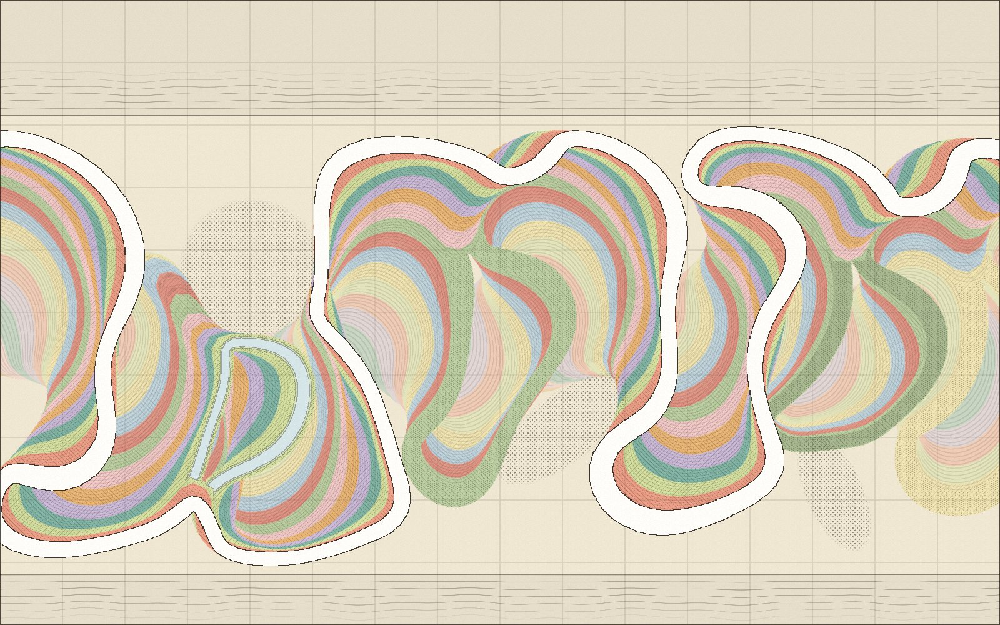

This is a kept river: No. 3, in its year 2,000. With scripts on, the page runs a new river and plays its years.
Year 2,000

- The river in the year shown
- Ground it has left: a color for each hundred years, ruled after year 1,000, paler with age
- Water standing in a loop it cut off
- Where a bank stood, every 20 years
- Clay set in an old loop: slow to cut
- Ground that was hard from the start
- The walls of the valley
Point at the ground to see when the river left it, and where the river ran that year. Click to go to that year.Tap the ground to go to the year the river left it.
What this is
A river seen from above, in its valley. Each year every part of the river moves a little, toward the outside of its bend. It is widest where its banks are moving fastest, and narrow where they are held. The ground it gives up is inked in the color of the century in which it left, and printed paler as it ages. When the two sides of a loop come together, the river takes the short way; the loop keeps its water for a while and then closes up.
Nothing is stored. The number in the address is where the chance comes from, and it decides two things. One is the river’s character: how big it is on the sheet, how far upstream its bends take their lead from, how fast its banks move, how much it widens at its bends, how soon it cuts a loop off, the shape of its valley, and where the ground is hard. The other is the few low bends it starts with. The rest follows from the rule, and the same number always draws the same river.
Fisk’s maps
In 1944 the Mississippi River Commission published Geological Investigation of the Alluvial Valley of the Lower Mississippi River, the report of Harold N. Fisk of Louisiana State University. Its plate 22, fifteen sheets titled “Ancient Courses, Mississippi River Meander Belt”, draws the river’s older courses over one another, each in its own color. Sheet 7 is on Wikimedia Commons.

The report divides the river’s late history into 20 stages, 100 years apart. The last four are courses on record, going back to 1765. The older ones were read from scars in the ground on aerial photographs, and dated by how fast the river had moved since 1765. This page borrows the plan of the plate: twenty inks, one for each hundred years. It differs in one way. Fisk drew a whole course for each stage; here the ground is inked as the river leaves it.
The rule
It is the model of Alan Howard and Thomas Knutson, “Sufficient conditions for river meandering: A simulation approach”, 1984. A bank moves faster the tighter its bend, and fastest where the bend’s radius is about three widths of the river; in a tighter bend than that it slows again. And a bend is not moved by its own shape alone: each point moves by an average of the bends upstream of it, the near ones counting most. That second part is what makes bends lean downstream and grow into loops. The paper’s title says what it found: these two things are enough.
A river is not the same width all along. Where one bank is cut away faster than the other can build out behind it, the river widens. Esther Eke and others modeled that in 2014, and note that rivers which are wider at their bends tend to be the ones that move fastest. Here the width at each place leans toward what the bank’s speed there asks for, so a river swells at its quick bends and draws in where a wall, hard ground or a straight reach holds it.
The ground is not all alike. A cut-off loop fills with fine clay, and set clay is slow to cut: Fisk reported in 1947 that such plugs hold the Mississippi’s bends back, and Tao Sun and others put them into a model like this one in 1996. So here a river’s old loops get in the way of its new ones. Some valleys also start with patches of hard ground, which a bank cuts at a tenth of the usual rate.
The whole 2,000 years are worked out in about a second when the page opens. What you watch is that record played back, which is why the years can be dragged back along the rail, and why pointing at a piece of ground can say when the river left it.
What it leaves out
Floods. Islands and bars. The short cuts a river makes across the inside of a bend, which Fisk’s sheets mark as chute cut-offs: here a loop is cut off when its two sides come within a set distance, which for most rivers means touching. And a river that gives up its whole course for a new one, as the Mississippi has done.
The paper’s own text could not be opened while this page was made. The rule here follows its abstract and meanderpy, Zoltán Sylvester’s open program built on it, from which the two weights (−1 on a point’s own bend, 2.5 on the bends upstream) are taken. The rest are this page’s choices: how fast a tight bend slows, how much wider a fast bank makes the river (at most about twice its usual width), how long a cut-off loop holds water (about 400 years at its middle), how long its clay takes to set (150 years) and how slow it then is to cut (a fifth of the usual rate), and the range each river’s character is drawn from. So is the clock: the years are years because the fastest bank on any of these rivers moves about a twentieth of the river’s usual width in one, and most move far less.
One river, kept
For readers without scripts the page keeps one river, No. 3, as the picture above and as this table.
| Year | Length | Loops cut off so far |
|---|---|---|
| 0 | 1.0 | 0 |
| 200 | 1.0 | 0 |
| 400 | 1.3 | 0 |
| 600 | 1.8 | 0 |
| 800 | 2.4 | 0 |
| 1,000 | 2.8 | 0 |
| 1,200 | 2.9 | 1 |
| 1,400 | 2.8 | 3 |
| 1,600 | 2.7 | 3 |
| 1,800 | 2.9 | 3 |
| 2,000 | 2.6 | 4 |
No. 022. Set in Barlow and Newsreader. Home